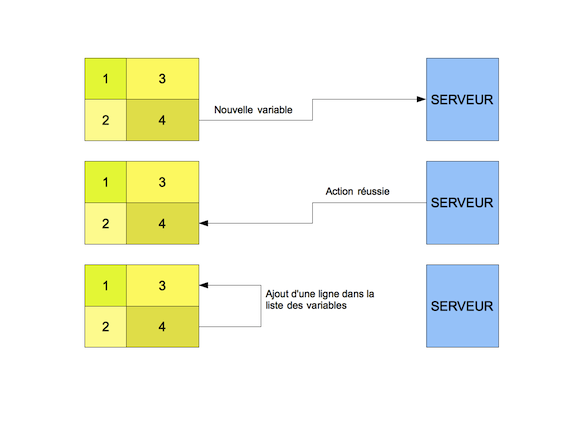
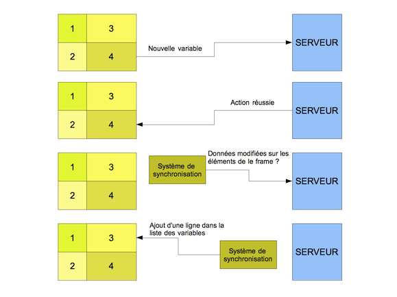

Mainframe¶
Introduction¶
La page MainFrame est le point d’entrée de l’utilisateur dans le système de listing/formulaire générés par Voozanoo4.
La page MainFrame est une page envoyée par le serveur au navigateur. Cette page est découpée en zone dont le contenu varie: listing, formulaire, tableau de bord, graph, etc. La page d’accueil de Google (iGoogle) est un exemple de MainFrame. Cette page nous servira de modèle. NB: la plupart des modules Voozanoo devraient pouvoir tenir dans une frame.
Il faut au maximum éviter le rechargement de cette page, ainsi les actions produites par l’utilisateur (sauvegarde de formulaire, modification du tri d’un tableau, etc.) seront traitées par le serveur via des requêtes AJAX. La plupart des composants de la lib YUI fonctionnent de cette manière.
Il existe actuellement 2 types de MainFrame :
- La MainFrame ‘one’, permettant l’affichage d’une seule frame dans la page
- La MainFrame ‘two’, permettant l’affiche de deux frames : une à gauche et une à droite
Cinétique¶
L’utilisateur accède à la MainFrame avec les paramètres nécessaires à l’initialisation d’une (ou plusieurs) frames, la MainFrame se charge de déterminer le(s) Display Path necessaire(s) à l’affichage de la / des frame(s) et effectue le rendu de la vue pour :
- Initialiser le moteur Javascript de Voozanoo 4
- Positioner les conteneurs des frames à afficher
- Effectuer les appels Ajax necessaires à l’obtention des données et du layout à afficher
- Construire les frames (le moteur JS de Voo4 se charge d’effectuer le rendu Html)
Fonctionnement¶
L’accès à la MainFrame se fait via le Module “mainframe”, le Controller “index” et les actions “one” et “two”. Chaque action requiert des paramètres :
- MainFrame de type ‘one’ (l’un ou l’autre des paramètres)
- Paramètre id : L’id_resource à afficher
- Paramètre dp : Le “Display Path” à utiliser pour afficher la Frame (Sous la forme Module_Controller_Action)
- MainFrame de type ‘two’
- Paramètre lid : L’id_resource à afficher dans la partie gauche
- Paramètre rid : L’id_resource à afficher dans la partie droite
Prenons l’exemple d’un lien mainframe/index/one/id/27, voici le fonctionnement de la MainFrame :
Analyse des paramètres fournis : id ou dp ?
- Déduction du Display Path à utiliser (sera utilisé pour l’appel Ajax) :
- Si paramètre id fourni : Le <display_path> définit dans le Xml de la Frame (Xml), ou celui par défaut (form/frame/get)
- Si paramètre dp fourni : Le paramètre recomposé sous forme d’Uri (module/controller/action)
Adjonction d’eventuels paramètres fournis via l’url afin de les communiquer à la frame
Affectation des Url à appeler via Ajax
Rendu de la vue ‘mainframe.phtml’ en renseignant le Partiel à utiliser (one.phtml / two.phtml)
Le moteur Js de Voozanoo4 prend ensuite le relais pour effectuer et traiter les appels Ajax.
Exemples de liens :
- mainframe/index/one/dp/project_roles_getroles : Appel de /project/roles/getroles pour récupérer la configuration de la frame
- mainframe/index/one/id/85/foo/bar/a/b : Appel de /form/frame/get/id/85 (par défaut) en passant les paramètres foo = bar et a = b (dans l’url)
- mainframe/index/two/lid/17/rid/24 : 2 appels Ajax (1 par frame) /form/frame/get/id/17 & /form/frame/get/id/24
Note
La MainFrame de type ‘two’ est très peu (pas du tout) utiliséd pour l’instant, il est possible qu’il manque quelques fonctionnalités, ou que des comportements ne soient pas prévus pour l’instant.
Chargement d’une frame sans requête XHR¶
Il est possible d’afficher une frame dans une page sans nécessairement faire de requête XHR pour récupérer le JSON décrivant la frame.
Pour cela il faut utiliser le partiel frame_creator.phtml, et assigner le JSON de la frame dans la méthode de rendu _get_render.
Exemple, Vue:
<!DOCTYPE html>
<html>
<head>
<title><?php echo $this->sPageTitle ?></title>
<meta charset="utf-8" />
<?php
//Display Style markup
echo $this->headLink();
echo "\n\n";
//Display Script markup
echo $this->headScript();
//Display Frame creator parial
echo $this->partial( 'frame/frame_creator.phtml', $this->getVars() );
?>
</head>
<body class="yui3-skin-sam yui-skin-sam">
<div id="page">
<header>
<div id="logo">
<h1>
<a href="<?php echo $this->sProjectUrl; ?>"></a>
</h1>
</div>
</header>
<div id="content">
<div id="main">
<div class="waiting-message">Chargement en cours...</div>
</div>
</div>
<footer></footer>
</div>
</body>
</html>
Envoie de la frame au format JSON:
protected function _provideruserlistcallback_get_render( Core_Library_Event_Context $oCtx )
{
$this->view->oFrameCfg = $oCtx->get('oResourceJSON')->GetContent();
}
Code source provenant du controleur Oauth_ConsumerController
Mise à jour des frames¶
TODO à mettre à jour
Intéraction entre les frames¶
D’après la maquette ci-dessus, nous remarquons des intéractions entre les frames:
- Si on sélectionne une nouvelle table, alors la liste des variables doit se mettre à jour pour afficher les variables de la table sélectionnée
- Intéraction directe entre les deux frames
- Si on ajoute une nouvelle variable dans la frame de définition d’une variable, alors la liste des variables doit se mettre à jour pour afficher la nouvelle variable.
- Une requête est d’abord envoyée au serveur pour créer la variable, ensuite la frame se met à jour. Soit la frame1 avertit la frame3 de se mettre à jour, soit le serveur indique à la frame3 de le faire.
Changements coté serveur¶
Les éléments affichés dans les frames peuvent représenter des données qui sont sur le serveur, comme les listings. Il peut y avoir des modifications sur ces données qui sont faites par d’autres utilisateurs (ajout d’une nouvelle fiche, modification de variables, etc.). Dans ce cas on peut avoir une différence entre les données affichées dans la frame, et celles qui sont sur le serveurs. Cet effet est accentué par le fait que le système de MainFrame var conduire à moins de rechargement des pages web que sur des applications classiques (comme sur Voozanoo3). Il faut donc mettre en place un système de rafraichissement des données.
Dans certains cas il ne sera pas possible de rafraichir les frames: prenons l’exemple d’une analyse sur un ensemble de donnée. Si on doit vérifier régulièrement qu’au moins une donnée utilisée dans le calcul a changé, alors nous risquons d’avoir des problèmes de performance. C’est pourquoi il faudra avoir pour certains éléments une mise à jour manuelle.
Il faudra lister les éléments qui nécessitent une mise à jour, et parmi ces éléments, ceux qui doivent être rafraichis automatiquement, et ceux manuellement.
Les frames communiquent entre elles pour se mettre à jour
Un système de synchronisation permet de mettre à jour les frames en interogeant régulièrement le serveur pour savoir si des données ont changé
